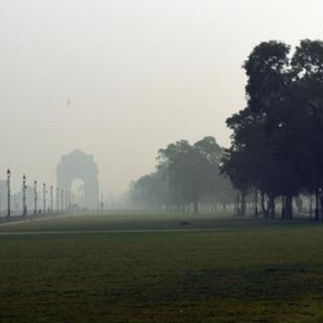
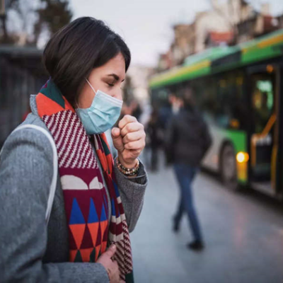

|
|  | Soon, pollution clinics at major Delhi hospitals to fight air-related illnessThe pollution clinics are likely to be opened at Lok Nayak Hospital-the largest state-run hospital and at Guru Teg Bahadur Hospital before being expanded to other government facilities Last Updated: Nov 17, 2022 16:20 AM IST
The Delhi government will on a pilot basis introduce pollution clinics at all major hospitals under its jurisdiction in December to cater to patients whose illness has been triggered by the poor air quality in the Capital during the winter, health department officials aware of the matter said on Wednesday. |
|  | 4 out of 5 families in Delhi-NCR are facing pollution-related health issues; 80% of families have at least one member with respiratory problemsDelhi’s air quality remains very poor, with an AQI (air quality index) reading of 348 on Sunday, 9 am. Last Updated: Nov 6, 2022, 13:02 IST
This is a slight improvement from Saturday’s 4 pm reading of 381, released as part of the national bulletin by the Central Pollution Control Board (CPCB). A recent survey of 19,000 people in Delhi-NCR found that four out of every five families in the region have claimed to experience pollution-related ailments in the last few weeks. The participants of the survey included residents of Delhi, Noida, Ghaziabad, Gurugram, and Faridabad. 63 percent of the respondents were male. |
©2022, All right reserved by Precisenews.com, Designed by: Harsh Tejaniya